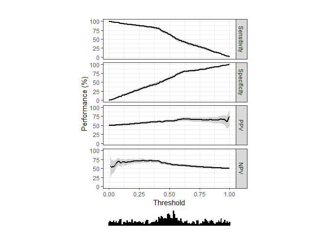
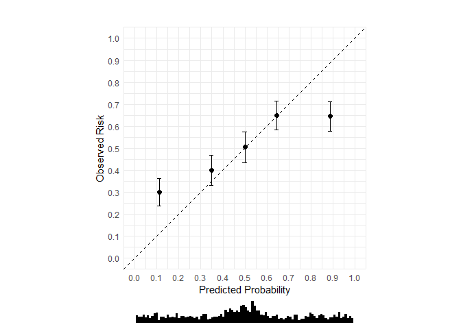
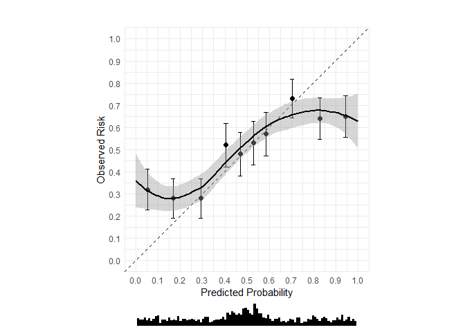
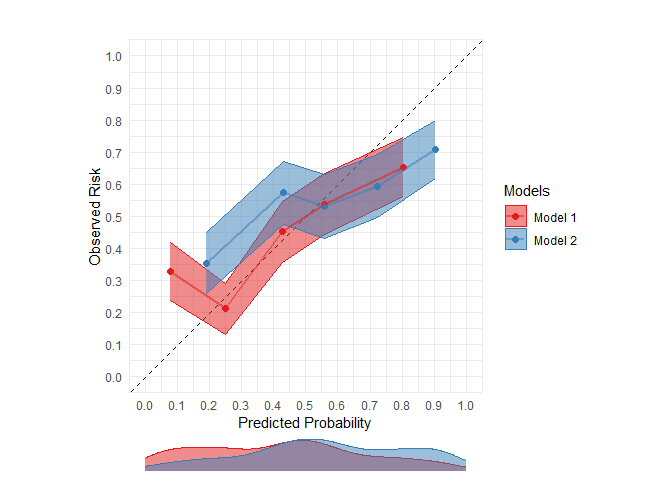
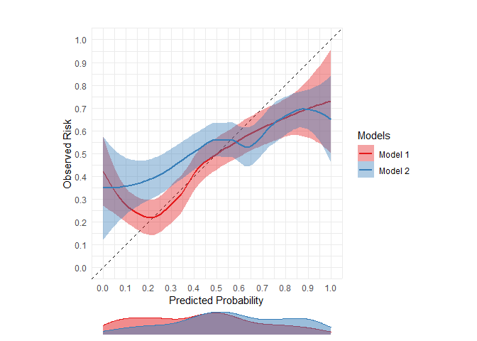
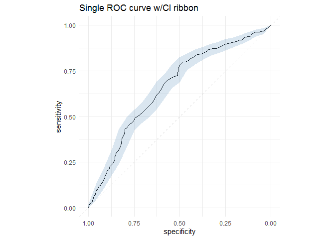

The goal of runway is to generate statistics and plots to calculate discrimination, calibration, and decision curves for prediction models.
Why is it called runway?
Because you can use it to visually compare models.
Sometimes your models look quite different.

Other times your models look the same…

Sample datasets
Runway comes with two sample datasets.
data(single_model_dataset)
head(single_model_dataset)
#> outcomes predictions
#> 1 0 0.36
#> 2 1 0.31
#> 3 0 0.39
#> 4 0 0.09
#> 5 0 0.44
#> 6 1 0.22
data(multi_model_dataset)
head(multi_model_dataset)
#> outcomes predictions model_name
#> 1 0 0.26 Model 2
#> 2 1 0.28 Model 1
#> 3 0 0.56 Model 2
#> 4 0 0.27 Model 1
#> 5 0 0.31 Model 1
#> 6 0 0.42 Model 2Evaluating a single model
Threshold-performance plot (single model)
threshperf_plot(single_model_dataset,
outcome = 'outcomes',
prediction = 'predictions')
Calibration plot with 10 bins (single model)
Note: 10 bins is the default.
cal_plot(single_model_dataset,
outcome = 'outcomes',
prediction = 'predictions')
Calibration plot with 5 bins (single model)
cal_plot(single_model_dataset,
outcome = 'outcomes',
prediction = 'predictions',
n_bins = 5)
Calibration plot with 10 bins and loess curve (single model)
cal_plot(single_model_dataset,
outcome = 'outcomes',
prediction = 'predictions',
show_loess = TRUE)
Calibration plot with loess curve only (single model)
cal_plot(single_model_dataset,
outcome = 'outcomes',
prediction = 'predictions',
n_bins = 0,
show_loess = TRUE)
Comparing multiple models
Threshold-performance plot (multiple models)
threshperf_plot_multi(multi_model_dataset,
outcome = 'outcomes',
prediction = 'predictions',
model = 'model_name')
Calibration plot with 10 bins (multiple models)
Note: 10 bins is the default.
cal_plot_multi(multi_model_dataset,
outcome = 'outcomes',
prediction = 'predictions',
model = 'model_name')
Calibration plot with 5 bins (multiple models)
cal_plot_multi(multi_model_dataset,
outcome = 'outcomes',
prediction = 'predictions',
model = 'model_name',
n_bins = 5)
Calibration plot with loess curve (multiple models)
Unlike single calibration plots, the choice of binned calibration and loess calibration are mutually exclusive. To show LOESS curves, you must set show_loess to TRUE and n_bins to 0.
cal_plot_multi(multi_model_dataset,
outcome = 'outcomes',
prediction = 'predictions',
model = 'model_name',
n_bins = 0,
show_loess = TRUE)
ROC curve w/CI
roc_plot(single_model_dataset,
outcome = 'outcomes',
prediction = 'predictions',
ci = TRUE,
plot_title = 'Single ROC curve w/CI ribbon')
Multiple ROC curves w/CI ribbons
roc_plot_multi(multi_model_dataset,
outcome = 'outcomes',
prediction = 'predictions',
model = 'model_name',
ci = TRUE,
plot_title = 'Multiple model ROC curves w/CI ribbons')